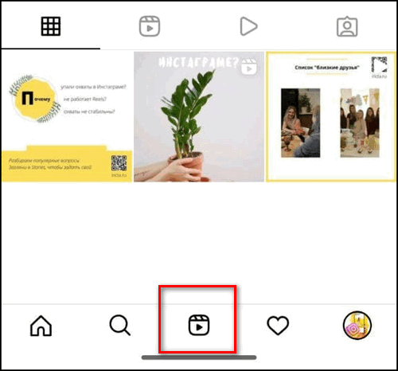
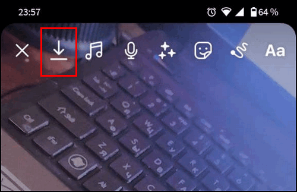
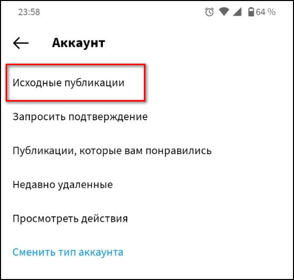
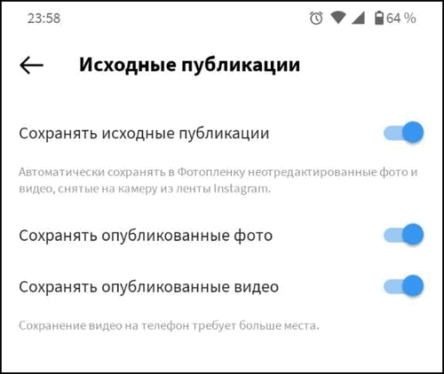
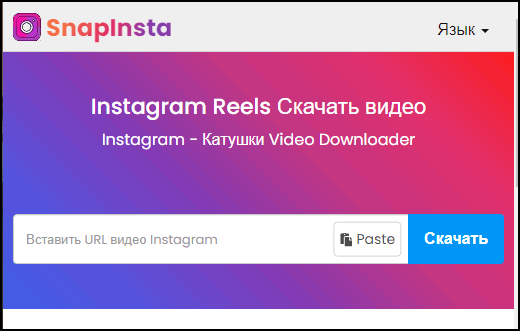
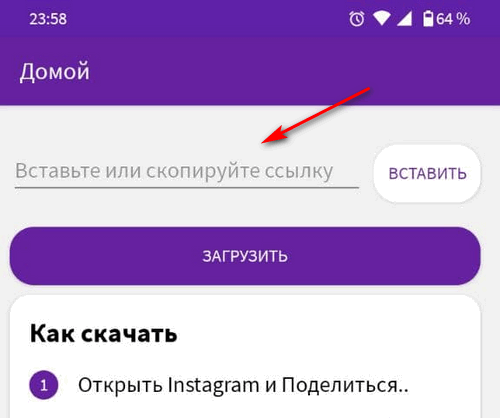
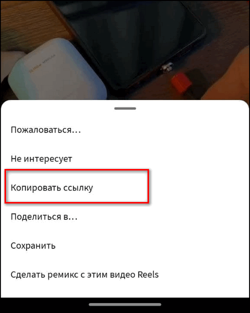
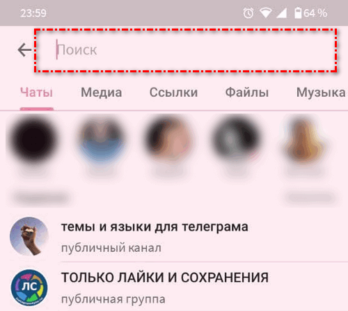
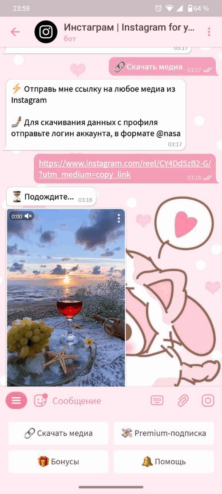
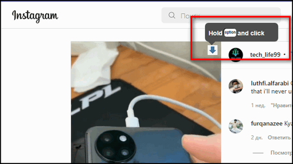

Как скачать видео из Рилс Инстаграма на телефон и компьютер

Скачать Рилс из Инстаграма* нельзя стандартными способами: как и фотографии, обычные видео и Истории. В социальной сети не предусмотрена функция загрузки материалов на мобильное устройство, если они опубликованы в чужом аккаунте.
Как скачать видео из Рилс на телефон
Скачать Рилс из Инстаграма* на телефон пользователь может в том случае, если он сам записал видеоклип и еще не опубликовал. Как и в Stories, сверху появится значок со стрелкой вниз, с помощью которого можно сохранять материалы на мобильное устройство. Если в аккаунте включена функция скачивания оригинальных публикаций, записанных через камеру в Инстаграме*, то пользователь также получит копию. Другие способы, как получить Рилс:
- с помощью сервисов. Сайты, которые предлагают по ссылке получить Reels на смартфон;
- мобильные приложения. Тот же функционал, что и у загрузки Историй;
- Телеграм-боты. В мессенджере можно найти вспомогательные каналы, где по ссылке пользователь получит нужный контент.
Сервисы работают на мобильной и компьютерной версии. Поэтому загрузить контент возможно не только на смартфон, а и компьютер.
В отличие от Тик Тока, в Инстаграме* отсутствует водяной знак. На видеоклипах нет упоминаний об авторе, поэтому в применении приложений и программ по удалению «вотемарки» нет необходимости.
Скачать свой записанный Reels в Инстаграме*
В социальной сети можно скачать Reels, который был записан самим владельцем устройства. Это касается материалов, которые находятся в меню предварительного просмотра.
- Зайти в свой профиль – нажать снизу по значку Рилс.
- Начать запись – отредактировать клип.

- Далее – сверху нажать по значку «стрелка вниз».

- Дождаться завершения загрузки.
- Зайти в «Настройки» - Аккаунт.

- Исходные публикации – Сохранять опубликованные видео.

Получить чужой Рилс через сервисы
С помощью онлайн-сервисов можно получить Reels на мобильное устройство.
Таким способом можно скачать чужой контент: вставить ссылку и выбрать качество.
Как скачать Рилс с помощью сервисов:
- Зайти в Инстаграм* – перейти к публикации.
- Нажать сверху три точки: «Скопировать ссылку» - получить URL.
- Перейти по ссылке: «Скачать Reels из Инстаграма*».

- Подождать, пока загрузится контент.
Далее, пользователю нужно указать качество клипа и получить его на мобильное устройство. Такой же способ подходит для работы с компьютерной версии.
Мобильные приложения
С помощью Play Market можно установить приложения, которые предназначены для скачивания Reels. Как и в случае с сервисами, владельцу профиля нужно вставить ссылку и дождаться прогрузки контента. Далее, можно выбирать вариант с загрузкой материалов на мобильное устройство. Как воспользоваться и получить чужой Reels:
- Зайти в Play Market – вписать в поисковике: «Reels Video Downloader for Instagram*».
- Установить – открыть с рабочего стола.

- Перейти в Инстаграм* – выбрать публикацию.
- Скопировать ссылку – вернуться в приложение.

- Вставить URL – скачать видео на смартфон.
Приложение сохраняет материалы в отдельный каталог в Галерее.
Кроме указанного, есть и другие утилиты, чтобы получить контент из Инстаграма*:
- Reels Downloader+Status. Работает по тому же принципу, скачивая контент по ссылке;
- Video Download. Можно загружать не только Рилс, но и стандартные клипы из социальной сети.
Особой разницы между приложениями нет, поэтому пользователь может подобрать любое и получить нужный контент. Исключения составляют клипы, которые были опубликованы в закрытых аккаунтах: приложение не сможет отобразить контент, который находится не в общедоступных страницах.
Бот-телеграм
Мессенджер Телеграм не только полезен в возможности общаться, но и популярен каналами с ботами. Это чаты, куда можно отправить запрос роботу и получить ответ в виде материалов, ссылок. Для работы с Reelsв Инстаграме* есть два бота:
- @inst4youBot. Но нужно подписаться еще и на вторую страницу;
- @allsaverbot. Можно получить любой контент из Инстаграма*, Вконтакте.
Чтобы воспользоваться ботом:
- Зайти в Телеграм – ввести в поиске: «@allsaverbot».
- Открыть переписку – Подписаться.

- Перейти в Инстаграм* – скопировать ссылку на нужный материал.
- Вставить URL в переписку – появится видео.

- Нажать сверху три точки: «Сохранить в Галерею».
Некоторые боты предлагают ограниченное количество скачиваний в день, что будет написано в одном из сообщений. Это простой и бесплатный способ, как получить контент не устанавливая дополнительных приложений или сервисов.
Получить Reels из Инстаграма* на ПК
Сохранить Reels из Инстаграма* по ссылке возможно с помощью онлайн-сервисов, но есть и другой вариант как получить контент: расширения для браузера. Как получить расширение и скачивать контент напрямую:
- Перейти в магазин плагинов Chrome – установить SaveFrom.
- Разрешить утилите работать в браузере – перейти в Инстаграм с веб-версии.

- Нажать над видео по значку: «Скачать» - подождать, пока контент будет загружен.
С помощью этого плагина можно скачать любой другой медиаконтент, включая фотографии и Истории. При каждом посещении Инстаграме* сверху появится значок в виде активного SaveFrom. В отличие от мобильных приложений и программ, плагины не занимают лишнее пространство на устройстве. Их можно отключить, воспользовавшись настройками браузера.
Что делать если аудиодорожка не сохранилась
Если при загрузке контента пользователь заметил, что трек не был загружен – нужно проверить оригинальную запись. Есть вероятность, что в видео изначально отсутствовала музыка. Другие варианты, почему звуки исчезли:
- старая версия Инстаграма*. Если у пользователя отсутствует раздел Рилс для записи и стикер с музыкой, то основная часть оригинальных дорожек будет недоступной;
- аудио было заблокировано после размещения;
- музыкальная композиция была удалена из-за требований правообладателя или по другим причинам.
Один из вариантов, как получить подобный контент – перейти к Инстаграму* с помощью других устройств. Это может быть смартфон, который поддерживает запись Рилс или компьютер/ноутбук, где социальная сеть не привязана к региональному распространению новых функций.